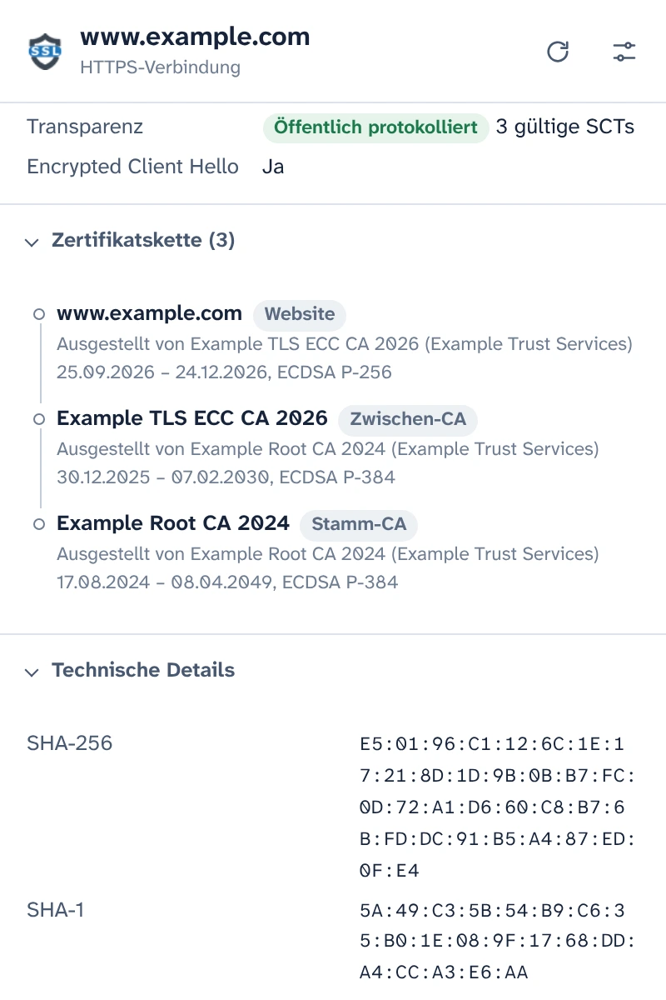
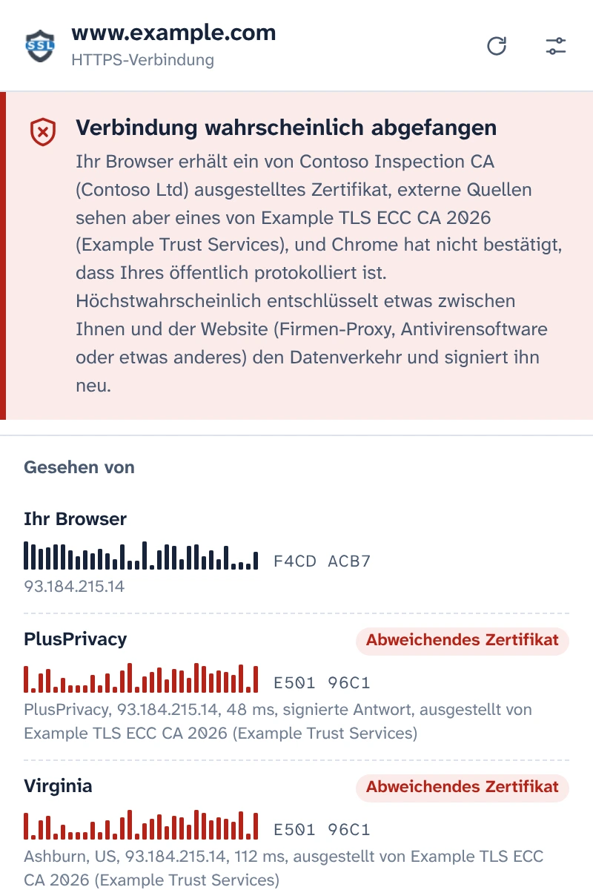
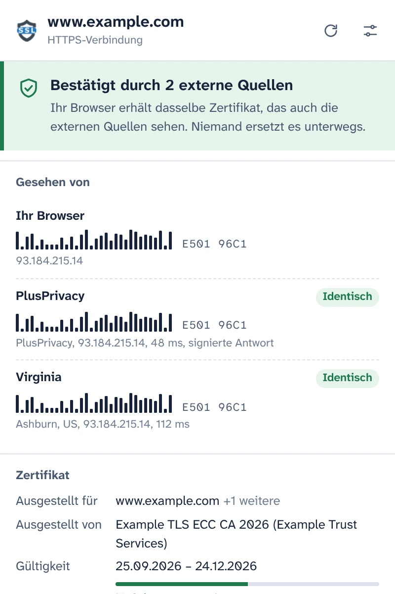
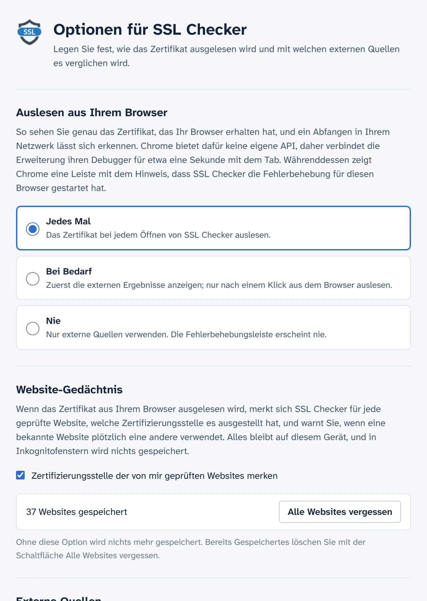

Sehen Sie das Zertifikat, das Ihr Browser tatsächlich erhalten hat
SSL Checker liest das Zertifikat der Website in Ihrem Tab direkt aus Chrome aus und vergleicht es mit dem, was unabhängige Notare von anderswo im Internet sehen. Weichen beide voneinander ab, ersetzt etwas zwischen Ihnen und der Website das Zertifikat.
Kostenlos und Open Source. Kein Konto, keine Analysedienste.
Bestätigt durch 2 externe QuellenVerbindung wahrscheinlich abgefangen
Ihr Browser erhält dasselbe Zertifikat, das auch die externen Quellen sehen. Niemand ersetzt es unterwegs.Ihr Browser erhält ein von Contoso Inspection CA ausgestelltes Zertifikat, die externen Quellen sehen aber eines von Example TLS ECC CA 2026.
- Ihr Browser E501 96C1F4CD ACB7
- PlusPrivacy IdentischAbweichendes Zertifikat E501 96C1
- Virginia IdentischAbweichendes Zertifikat E501 96C1
Jedes Detail der Verbindung
Was Chrome für diesen Tab erhalten hat, aus dem Browser selbst ausgelesen statt erneut von einem Server abgerufen.
- Abgedeckte Namen, Aussteller, Gültigkeit und verbleibende Tage, Validierungsstufe (DV, OV, EV)
- TLS-Version, Schlüsselaustausch einschließlich Post-Quanten-Hybriden, Chiffre und Encrypted Client Hello
- Status der Certificate Transparency und die signierten Zertifikatszeitstempel
- Die vollständige Zertifikatskette, Fingerabdrücke und alle Erweiterungen. Kopieren Sie das PEM oder laden Sie die Kette herunter.

Abfangen von HTTPS erkennen
Firmen-Proxys, der HTTPS-Scan von Antivirensoftware und Angreifer in öffentlichen WLANs gehen gleich vor: Alle entschlüsseln Ihren Datenverkehr und geben Ihrem Browser ein eigenes Zertifikat. Die Seite sieht normal aus, und das Schloss-Symbol bleibt.
SSL Checker fragt den PlusPrivacy-Notar und jeden Notar, den Sie hinzufügen, welches Zertifikat ihnen dieselbe Website zeigt. Die Notare verbinden sich von anderswo im Internet, an allem vorbei, was in Ihrem Netzwerk zwischengeschaltet ist, und die Fingerabdrücke werden verglichen:
- Überall dasselbe Zertifikat: bestätigt.
- Ihres ist anders und nicht öffentlich protokolliert: wahrscheinlich abgefangen. SSL Checker nennt die Zertifizierungsstelle, die das Ersatzzertifikat ausgestellt hat, und erkennt bekannte Produkte zur HTTPS-Inspektion.
- Die Quellen widersprechen sich: wird als solches gemeldet, mit einer Erklärung, was jeder Fall bedeuten kann.

Antworten, die unterwegs niemand fälschen kann
Etwas, das Ihren Datenverkehr abfängt, könnte auch versuchen, im Namen eines Notars zu antworten. Das gelingt nicht: Der PlusPrivacy-Notar signiert jede Antwort mit Ed25519, und SSL Checker prüft die Signatur, eine mit jeder Anfrage gesendete Zufallszahl und die Website, nach der gefragt wurde. Eine gefälschte, wiederholte oder umgeleitete Antwort wird abgelehnt, und das Pop-up meldet, dass etwas sie verändert hat.
Eigenen Notar betreiben
Der Notar ist Open Source: ein kleiner Node.js-Dienst für Docker, geschützt gegen Anfragefluten und gegen Anfragen an private Netzwerke. Installieren Sie ihn auf einem beliebigen Server, tragen Sie seine Adresse und seinen Schlüssel in den Optionen ein, und seine Antworten werden genauso geprüft.

Sie bestimmen, wann der Debugger läuft
Chrome bietet Erweiterungen keine API für das Zertifikat einer geladenen Seite. Daher verbindet SSL Checker den Debugger von Chrome für etwa eine Sekunde mit dem Tab, um das Zertifikat auszulesen, und Chrome zeigt währenddessen seine Fehlerbehebungsleiste an. In den Optionen legen Sie fest, wann das geschieht:
- Jedes Mal, wenn Sie das Pop-up öffnen
- Bei Bedarf, mit einem Klick im Pop-up
- Nie: Es werden nur die Notare gefragt
Merkt sich die geprüften Websites
SSL Checker merkt sich, welche Zertifizierungsstelle jede Website nutzt, und warnt Sie, wenn eine bekannte Website plötzlich eine andere verwendet, zum Beispiel in einem neuen WLAN. Dieses Website-Gedächtnis bleibt auf Ihrem Gerät, wird in Inkognitofenstern nie verwendet und lässt sich in den Optionen deaktivieren oder löschen.

Von Grund auf privat
- Nichts wird ausgelesen oder gesendet, bevor Sie im Pop-up zustimmen.
- Nur Hostname und Port der Website verlassen Ihr Gerät, im Body einer HTTPS-Anfrage an die Notare, die Sie verwenden.
- Der PlusPrivacy-Notar führt keine Aufzeichnungen über die geprüften Websites. Sie können ihn deaktivieren oder nur Notare fragen, die Sie selbst betreiben.
- Keine Analysedienste, kein Tracking, kein Konto. Das Website-Gedächtnis verlässt nie Ihr Gerät.
- Auch diese Website verwendet keine Analysedienste und lädt nichts von anderen Servern.
POST /v1/cert
Content-Type: application/json
{
"host": "www.example.com",
"port": 443,
"nonce": "Xq3MpTb0vR9kLs2eWn5yZA"
}